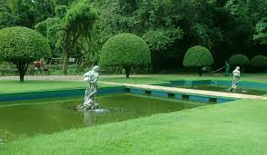

Parque das Águas de São Lourenço - MG
Endereço: Praça João Lage, S/N - Centro, São Lourenço - MG, 37470-000
O Parque das Águas localiza-se na cidade de São Lourenço, estado de Minas Gerais, na região dos Circuito das Águas, sendo a principal atração turística da cidade. Possui 430 mil metros quadrados de área, com nove fontes de águas minerais, cada uma com suas propriedades terapêuticas e medicinais em particular.